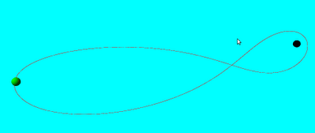

vpython
3 boyutlu animasyon, fiziksel objelerin modellenmesi icin bir paket: vpython. Fizik derslerinde egitim amaclari icin ideal. Paket fiziksel objelerin sanal olarak 3 boyutlu ortama konulmasi, onlarin diger objelere verecegi tepkilerin kodlanmasi icin ozellikler sunuyor.
Ubuntu 11 uzerinde kurmak icin
sudo apt-get install python-visual
Eger KineticKit eklemek istersek, suraya bakilabilir.
Orneklerden biri sabit ay ve dunya kosullarinda Apollo 13 uzay seferinin takip ettigi yolu simule etmek. Sonuc animasyonlu olarak gosterilecek. Kodlar alttaki baglantida.
VPython paketinden cikan bazi ornek kodlar surada. Cok objeli bir yayli sistemi canli olarak gosteren ilginc bir program crystal.py. Sonuc alttaki gibi (yuklenmesi biraz zaman alabilir). Bu animasyonu yapan kod 160 kusur satirlik bir koddan ibaret. Tum fiziksel kosullari tanimlanmis ve canli halde isliyor. Bu tur simulasyonlari yapmak cok daha fazla kodlama ve eskiden ozel bilgisayarlar gerektirirdi.
Kaynak
